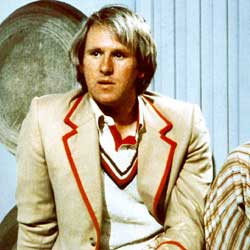

| Home | The Doctors | The Companions | The Villians | Show History |
|
Peter DavidsonPeter Davison (born Peter Malcolm Gordon Moffett on 13 April 1951)[1] is an English actor, best known for his roles as Tristan Farnon in the television version of James Herriot's All Creatures Great and Small, and as thefifth incarnation of the Doctor in Doctor Who, which he played from 1981 to 1984.[2] Also, he played David Braithwaite in At Home with the Braithwaites. Since 2011 he has been playing Henry Sharpe in Law & Order: UK. |
Brendan Davey Monica DuCong'e Erik Eyler Kayleen Garcia Katherine Hyche Ryan Moeller |
Christine O'Brien Dilman Alex Recinos Julia Schwartz Madeleine Schwartz Ann Marie Skjold Ashly Wilkins |
[Reference Links] |